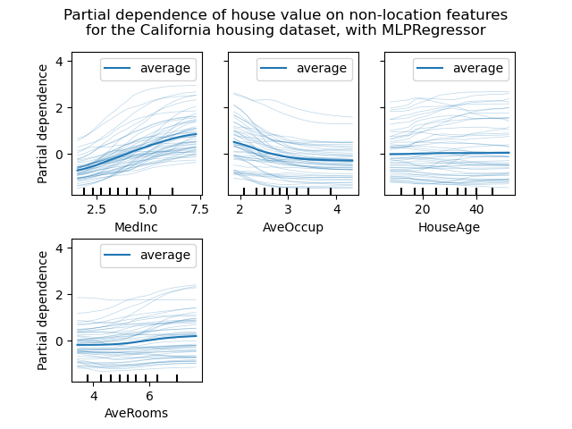
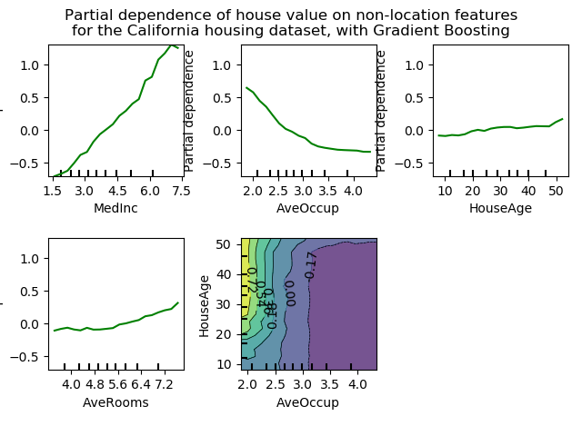
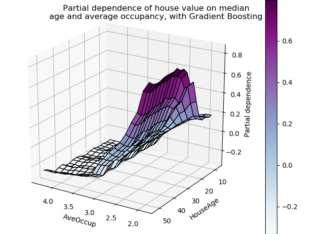

Note
Click here to download the full example code or run this example in your browser via Binder
Partial Dependence Plots¶
Partial dependence plots show the dependence between the target function 2 and a set of ‘target’ features, marginalizing over the values of all other features (the complement features). Due to the limits of human perception, the size of the target feature set must be small (usually, one or two) thus the target features are usually chosen among the most important features.
This example shows how to obtain partial dependence plots from a
MLPRegressor and a
HistGradientBoostingRegressor trained on the
California housing dataset. The example is taken from 1.
The plots show four 1-way and two 1-way partial dependence plots (ommitted for
MLPRegressor due to computation time). The
target variables for the one-way PDP are: median income (MedInc), average
occupants per household (AvgOccup), median house age (HouseAge), and
average rooms per household (AveRooms).
- 1
T. Hastie, R. Tibshirani and J. Friedman, “Elements of Statistical Learning Ed. 2”, Springer, 2009.
- 2
For classification you can think of it as the regression score before the link function.
print(__doc__)
from time import time
import numpy as np
import matplotlib.pyplot as plt
from mpl_toolkits.mplot3d import Axes3D
from sklearn.model_selection import train_test_split
from sklearn.preprocessing import QuantileTransformer
from sklearn.pipeline import make_pipeline
from sklearn.inspection import partial_dependence
from sklearn.inspection import plot_partial_dependence
from sklearn.experimental import enable_hist_gradient_boosting # noqa
from sklearn.ensemble import HistGradientBoostingRegressor
from sklearn.neural_network import MLPRegressor
from sklearn.datasets.california_housing import fetch_california_housing
California Housing data preprocessing¶
Center target to avoid gradient boosting init bias: gradient boosting with the ‘recursion’ method does not account for the initial estimator (here the average target, by default)
cal_housing = fetch_california_housing()
names = cal_housing.feature_names
X, y = cal_housing.data, cal_housing.target
y -= y.mean()
X_train, X_test, y_train, y_test = train_test_split(X, y, test_size=0.1,
random_state=0)
Partial Dependence computation for multi-layer perceptron¶
Let’s fit a MLPRegressor and compute single-variable partial dependence plots
print("Training MLPRegressor...")
tic = time()
est = make_pipeline(QuantileTransformer(),
MLPRegressor(hidden_layer_sizes=(50, 50),
learning_rate_init=0.01,
early_stopping=True))
est.fit(X_train, y_train)
print("done in {:.3f}s".format(time() - tic))
print("Test R2 score: {:.2f}".format(est.score(X_test, y_test)))
Out:
Training MLPRegressor...
done in 6.017s
Test R2 score: 0.82
We configured a pipeline to scale the numerical input features and tuned the neural network size and learning rate to get a reasonable compromise between training time and predictive performance on a test set.
Importantly, this tabular dataset has very different dynamic ranges for its features. Neural networks tend to be very sensitive to features with varying scales and forgetting to preprocess the numeric feature would lead to a very poor model.
It would be possible to get even higher predictive performance with a larger neural network but the training would also be significantly more expensive.
Note that it is important to check that the model is accurate enough on a test set before plotting the partial dependence since there would be little use in explaining the impact of a given feature on the prediction function of a poor model.
Let’s now compute the partial dependence plots for this neural network using the model-agnostic (brute-force) method:
print('Computing partial dependence plots...')
tic = time()
# We don't compute the 2-way PDP (5, 1) here, because it is a lot slower
# with the brute method.
features = [0, 5, 1, 2]
plot_partial_dependence(est, X_train, features, feature_names=names,
n_jobs=3, grid_resolution=20)
print("done in {:.3f}s".format(time() - tic))
fig = plt.gcf()
fig.suptitle('Partial dependence of house value on non-location features\n'
'for the California housing dataset, with MLPRegressor')
fig.tight_layout(rect=[0, 0.03, 1, 0.95])

Out:
Computing partial dependence plots...
done in 1.662s
Partial Dependence computation for Gradient Boosting¶
Let’s now fit a GradientBoostingRegressor and compute the partial dependence plots either or one or two variables at a time.
print("Training GradientBoostingRegressor...")
tic = time()
est = HistGradientBoostingRegressor()
est.fit(X_train, y_train)
print("done in {:.3f}s".format(time() - tic))
print("Test R2 score: {:.2f}".format(est.score(X_test, y_test)))
Out:
Training GradientBoostingRegressor...
done in 0.416s
Test R2 score: 0.85
Here, we used the default hyperparameters for the gradient boosting model without any preprocessing as tree-based models are naturally robust to monotonic transformations of numerical features.
Note that on this tabular dataset, Gradient Boosting Machines are both significantly faster to train and more accurate than neural networks. It is also significantly cheaper to tune their hyperparameters (the default tend to work well while this is not often the case for neural networks).
Finally, as we will see next, computing partial dependence plots tree-based models is also orders of magnitude faster making it cheap to compute partial dependence plots for pairs of interacting features:
print('Computing partial dependence plots...')
tic = time()
features = [0, 5, 1, 2, (5, 1)]
plot_partial_dependence(est, X_train, features, feature_names=names,
n_jobs=3, grid_resolution=20)
print("done in {:.3f}s".format(time() - tic))
fig = plt.gcf()
fig.suptitle('Partial dependence of house value on non-location features\n'
'for the California housing dataset, with Gradient Boosting')
fig.tight_layout(rect=[0, 0.03, 1, 0.95])

Out:
Computing partial dependence plots...
done in 0.130s
Analysis of the plots¶
We can clearly see that the median house price shows a linear relationship with the median income (top left) and that the house price drops when the average occupants per household increases (top middle). The top right plot shows that the house age in a district does not have a strong influence on the (median) house price; so does the average rooms per household. The tick marks on the x-axis represent the deciles of the feature values in the training data.
We also observe that MLPRegressor has much
smoother predictions than
HistGradientBoostingRegressor. For the plots to be
comparable, it is necessary to subtract the average value of the target
y: The ‘recursion’ method, used by default for
HistGradientBoostingRegressor, does not account
for the initial predictor (in our case the average target). Setting the
target average to 0 avoids this bias.
Partial dependence plots with two target features enable us to visualize interactions among them. The two-way partial dependence plot shows the dependence of median house price on joint values of house age and average occupants per household. We can clearly see an interaction between the two features: for an average occupancy greater than two, the house price is nearly independent of the house age, whereas for values less than two there is a strong dependence on age.
3D interaction plots¶
Let’s make the same partial dependence plot for the 2 features interaction, this time in 3 dimensions.
fig = plt.figure()
target_feature = (1, 5)
pdp, axes = partial_dependence(est, X_train, target_feature,
grid_resolution=20)
XX, YY = np.meshgrid(axes[0], axes[1])
Z = pdp[0].T
ax = Axes3D(fig)
surf = ax.plot_surface(XX, YY, Z, rstride=1, cstride=1,
cmap=plt.cm.BuPu, edgecolor='k')
ax.set_xlabel(names[target_feature[0]])
ax.set_ylabel(names[target_feature[1]])
ax.set_zlabel('Partial dependence')
# pretty init view
ax.view_init(elev=22, azim=122)
plt.colorbar(surf)
plt.suptitle('Partial dependence of house value on median\n'
'age and average occupancy, with Gradient Boosting')
plt.subplots_adjust(top=0.9)
plt.show()

Total running time of the script: ( 0 minutes 9.928 seconds)
Estimated memory usage: 8 MB